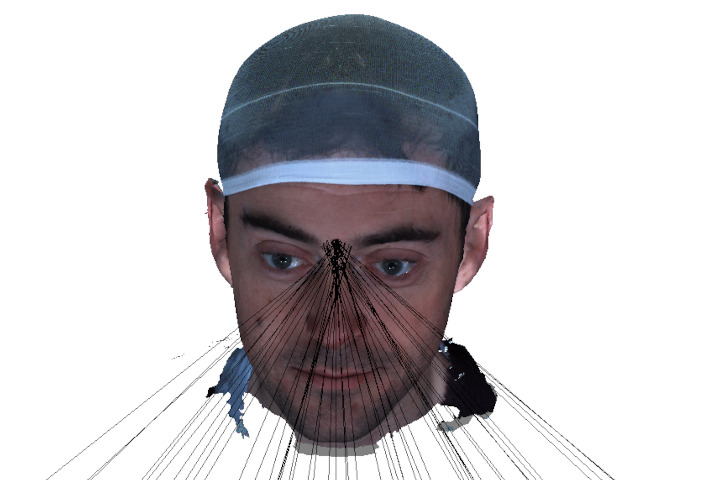

Teoria
Questa pagina descrive le tecniche di geometria computazionale utilizzate in FaceMarks per aggregare i risultati del raycasting multi-vista in posizioni 3D accurate dei punti facciali.
Pipeline di Raycasting Multi-Vista
La sfida principale nel rilevamento 3D di punti facciali è determinare una singola posizione 3D da osservazioni 2D multiple. FaceMarks renderizza una mesh 3D da molteplici punti di vista, proietta i punti 2D come raggi nello spazio 3D e aggrega i punti di intersezione usando uno dei diversi metodi descritti di seguito.
Metodi
1. Generazione dei Punti di Vista
La pipeline inizia generando un numero impostabile di angoli di vista attorno alla mesh. Gli angoli sono campionati su un intervallo di rotazioni:
- Asse X: $[0,\; \pi/8]$
- Asse Y: $[-\pi/4,\; \pi/4]$
Ogni punto di vista definisce un orientamento della camera tramite una matrice di rotazione applicata alla direzione frontale.
2. Rendering Offscreen
Per ogni punto di vista, la mesh viene renderizzata offscreen usando un visualizzatore Open3D con una risoluzione fissa (720×720). La matrice estrinseca della camera (trasformazione mondo-camera) e la matrice intrinseca (lunghezza focale, punto principale) sono acquisite dal renderer. Lo sfondo è impostato su nero per semplificare l'elaborazione successiva.
3. Rilevamento 2D dei Punti Facciali
Ogni immagine renderizzata viene passata a un rilevatore MediaPipe FaceMesh, che identifica fino a 478 punti facciali 2D in coordinate immagine. I punti non rilevati (ad esempio per auto-occlusione o basso contrasto) vengono semplicemente saltati per quel punto di vista.
4. Hidden Point Removal (HPR)
Non tutti i punti 2D del rilevatore sono geometricamente validi — alcuni possono corrispondere a regioni occluse (es. punti sul lato opposto del volto). Per filtrarli, FaceMarks applica la Rimozione dei Punti Nascosti:
- Costruzione di una mesh triangolare temporanea dai 478 punti (posizionati su una sfera unitaria con la topologia di triangolazione FaceMesh)
- Calcolo delle normali di superficie e determinazione di quali punti sono rivolti verso la direzione della camera
- Mantenimento solo dei punti visibili
Questo assicura che solo i punti sulla superficie visibile contribuiscano ai raggi per ogni vista.
5. Direzioni dei Raggi Prospettici
Per ogni punto 2D visibile, la direzione del raggio è calcolata nello spazio camera usando la matrice intrinseca. Dato un punto alle coordinate pixel $(u, v)$, si ha $\mathbf{d}_{\text{cam}} = K^{-1} [u,\; v,\; 1]^\top$, dove $K$ è la matrice intrinseca. Questo dà la direzione del raggio dal centro della camera attraverso il pixel sul piano immagine.
6. Trasformazione dei Raggi nello Spazio Mondo
Le direzioni dei raggi nello spazio camera vengono trasformate nello spazio mondo usando la matrice di rotazione della camera per il punto di vista corrente: $\mathbf{d}_{\text{world}} = \mathbf{d}_{\text{cam}} \, R^{-1}$. L'origine del raggio è la posizione della camera in coordinate mondo, estratta dalla matrice estrinseca. Ogni raggio è memorizzato come vettore a 6 elementi $[\text{orig}_x, \text{orig}_y, \text{orig}_z, \text{dir}_x, \text{dir}_y, \text{dir}_z]$.
7. Aggregazione dei Raggi
Dopo aver elaborato tutti i punti di vista, i raggi sono raggruppati per indice del punto facciale. Questi raggi vengono poi passati alla fase di raycasting, dove vengono intersecati con la mesh e aggregati in una singola posizione 3D per punto.
Il Problema delle Intersezioni Raggio-Mesh
Per ogni punto facciale, la pipeline produce un insieme di raggi $\{r_1, r_2, \ldots, r_n\}$ una per ogni vista valida. Ogni raggio ha un'origine $\mathbf{o}_i$ (posizione della camera) e una direzione $\mathbf{d}_i$ (calcolata dalla matrice intrinseca e trasformata nello spazio mondo). Quando questi raggi vengono lanciati contro la mesh, producono punti di intersezione $\{\mathbf{h}_1, \mathbf{h}_2, \ldots, \mathbf{h}_m\}$ con $m \leq n$.
I punti di intersezione non coincidono perfettamente a causa di:
- Errore di rilevamento 2D del landmarker MediaPipe
- Angoli di proiezione differenti che causano leggeri spostamenti sulla superficie
- Occlusioni parziali dove il raggio colpisce una superficie diversa
- Limiti di risoluzione del raycasting stesso

Strategie Implementate
Sono state implementate e testate cinque diverse strategie per risolvere il problema dell'aggregazione. Una è in produzione, le altre quattro sono state sviluppate come approcci sperimentali con diversi compromessi.
1. Selezione Hit a Minima Varianza
Per ogni punto facciale, i raggi vengono lanciati da molteplici punti di vista contro la mesh. Tutti i punti di hit validi vengono raccolti e viene calcolata una matrice delle distanze pairwise. Il metodo seleziona il punto hit con la minima distanza quadratica media rispetto a tutti gli altri hit come posizione rappresentativa del punto facciale.
Questo approccio assume che gli hit coerenti (quelli che appaiono in più viste) si raggruppino densamente, mentre gli hit outlier (da angoli radenti o occlusioni) saranno spazialmente dispersi. Minimizzare la distanza quadratica media trova efficacemente il centro del cluster di hit più denso. Formalmente, dato l'insieme di punti hit $H = \{\mathbf{h}_1, \ldots, \mathbf{h}_n\}$, si calcola per ogni $\mathbf{h}_i$ il punteggio $s_i = \bigl(\frac{1}{n}\sum_{j=1}^{n} \|\mathbf{h}_i - \mathbf{h}_j\|\bigr)^2$. Il punto selezionato è $\mathbf{h}_{k}$ dove $k = \arg\min_i s_i$.
2. Metodo del Punto Più Vicino (Centroide)
Questo metodo calcola il centroide (media aritmetica) di tutti i punti hit validi dal raycasting, poi proietta questo centroide sul vertice più vicino della mesh. Dati i punti hit $\{\mathbf{h}_i\}_{i=1}^n$, si calcola $\mathbf{c} = \frac{1}{n}\sum_{i=1}^{n} \mathbf{h}_i$ e si seleziona il vertice $v^* = \arg\min_{v} \|\mathbf{v} - \mathbf{c}\|$. È un semplice approccio di mediazione che funziona bene quando i punti hit sono raggruppati strettamente.
Limitazioni: Sensibile agli hit outlier. Un singolo raggio errato (es. che colpisce una superficie sbagliata per auto-occlusione della mesh) può spostare significativamente il centroide.
3. Media su Triangolo Più Colpito
Per ogni landmark si effettua il raycasting e si seleziona il triangolo della mesh che risulta maggiormente colpito dai raggi. Il punto finale del landmark viene calcolato come media delle posizioni di intersezione dei raggi che cadono all'interno di quel triangolo.
Data l'insieme di intersezioni $H = \{\mathbf{h}_1, \ldots, \mathbf{h}_n\}$, si raggruppano le intersezioni per triangolo colpito e si seleziona il triangolo con il maggior numero di hit. La posizione finale è:
dove $T_k$ è l'insieme delle intersezioni che cadono nel triangolo $k$ con il maggior numero di hit. Poiché la media convessa di punti in un triangolo rimane sempre all'interno dello stesso (proprietà della chiusura convessa), il risultato è garantito come punto sulla superficie del triangolo.
Vantaggi: Calcolo molto rapido e intrinsecamente robusto agli outlier,
poiché i raggi errati che colpiscono triangoli diversi vengono naturalmente esclusi
dalla selezione del triangolo maggioritario.
Limitazioni: La dimensione dei triangoli è un fattore fortemente influente
sul risultato ma non controllabile, dipendendo puramente dalla risoluzione e dalla
discretizzazione del modello in input.
4. Punto Più Vicino a Tutti i Raggi (Minimi Quadrati)
Questo metodo formula il problema come la ricerca del punto nello spazio 3D che minimizza la somma delle distanze perpendicolari a tutte le linee dei raggi (trattate come linee infinite). Usa una formulazione ai minimi quadrati:
Per ogni raggio con origine $\mathbf{o}_i$ e direzione $\mathbf{d}_i$ (con $\|\mathbf{d}_i\| = 1$), la matrice di proiezione $P_i = I - \mathbf{d}_i \mathbf{d}_i^\top$ proietta sul piano perpendicolare al raggio. Il punto ottimale $\mathbf{x}^*$ minimizza $\sum_{i=1}^{n} \|P_i(\mathbf{x} - \mathbf{o}_i)\|^2$, che porta al sistema lineare $A\mathbf{x} = \mathbf{b}$ con $A = \sum_{i=1}^{n} P_i$ e $\mathbf{b} = \sum_{i=1}^{n} P_i \mathbf{o}_i$. Il risultato viene poi proiettato sul vertice più vicino della mesh.
Vantaggi: Non richiede intersezioni raggio-mesh effettive. Funziona
anche quando i raggi mancano la mesh (es. per occlusione).
Limitazioni: Tratta i raggi come linee infinite, quindi può produrre
punti dietro le origini dei raggi se i raggi sono divergenti.
5. Metodo del Piano Tangente
Questo metodo seleziona i k punti hit con i punteggi di varianza più bassi (tipicamente k=3), costruisce un piano tangente locale da questi punti e ri-proietta i raggi su questo piano per affinare le posizioni di intersezione.
Passaggi:
- Selezione dei 3 punti hit con minima distanza quadratica media
- Calcolo del piano passante per questi tre punti
- Calcolo della normale del piano tramite prodotto vettoriale dei vettori bordo
- Intersezione di tutti i raggi originali con questo piano locale
- Media dei punti di intersezione sul piano
- Raycasting dal punto mediato lungo la normale del piano per trovare l'intersezione finale con la mesh
Dati tre punti $\mathbf{p}_0, \mathbf{p}_1, \mathbf{p}_2$, si definiscono i vettori bordo $\mathbf{e}_1 = \mathbf{p}_1 - \mathbf{p}_0$ e $\mathbf{e}_2 = \mathbf{p}_2 - \mathbf{p}_0$. La normale al piano è $\mathbf{n} = \frac{\mathbf{e}_1 \times \mathbf{e}_2}{\|\mathbf{e}_1 \times \mathbf{e}_2\|}$.
Vantaggi: Tiene conto della geometria locale della superficie. Può
affinare le posizioni su superfici curve dove la media semplice fallisce.
Limitazioni: Richiede almeno 3 hit validi. Sensibile alla selezione
iniziale dei punti a bassa varianza.
Intersezione Raggio-Piano
Il metodo del piano tangente e altri algoritmi richiedono il calcolo dell'intersezione
di raggi con un piano. Dato un piano con origine $\mathbf{p}_0$ e normale
$\mathbf{n}$, e un raggio con origine $\mathbf{o}$ e direzione $\mathbf{d}$, il
parametro di intersezione è $t = \frac{\mathbf{n} \cdot (\mathbf{p}_0 - \mathbf{o})}{\mathbf{n} \cdot \mathbf{d}}$.
Il punto di intersezione è $\mathbf{r} = \mathbf{o} + t\mathbf{d}$. I raggi paralleli
al piano (dove $|\mathbf{n} \cdot \mathbf{d}| < \varepsilon$) vengono scartati. Solo
le intersezioni con $t \geq 0$ (davanti all'origine del raggio) sono considerate valide.
Questo è implementato in plane_raycast() usando operazioni vettorizzate
NumPy per efficienza.
Riepilogo
| Metodo | Approccio | Ideale per |
|---|---|---|
| Minima Varianza | Selezione hit con distanza minima dagli altri | Uso generale (predefinito) |
| Centroide | Media di tutti gli hit, proiezione sulla mesh | Hit strettamente raggruppati |
| Punto più Vicino ai Raggi | Minimi quadrati alle linee dei raggi | Quando i raggi possono mancare la mesh |
| Piano Tangente | Adattamento piano locale + ri-proiezione | Affinamento su superfici curve |
| Media su Triangolo Più Colpito | Selezione triangolo maggioritario + media intersezioni | Rapido e robusto, dipende dalla discretizzazione |
Metodo Selezionato
A seguito della valutazione comparativa, il metodo a Minima Varianza è stato selezionato come algoritmo di aggregazione in produzione.
Questo metodo ha consentito di ottenere i risultati migliori rispetto agli altri approcci testati, mantenendo al contempo una buona efficienza computazionale. La sua capacità di selezionare il cluster più denso di intersezioni lo rende intrinsecamente robusto agli outlier, senza la complessità aggiuntiva di metodi più elaborati come il Piano Tangente o la Media su Triangolo.